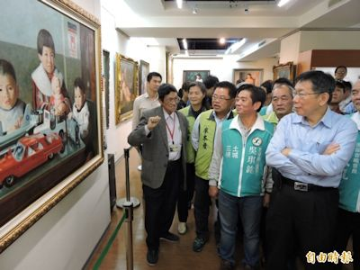

訪李梅樹紀念館 柯P嘆本土藝術保存不力
何玉華｜自由時報／大台北都會新聞｜2015年12月6日
台北市長柯文哲今天參訪三峽李梅樹紀念館，感慨對台灣這麼重要的一個畫家，作品卻沒有足夠的空間保存，也顯示過去對本土的藝術保存不夠認真；李梅樹紀念館館長李景光表示，紀念館都靠家族獨立經營，每年營運費用約200萬元，對參觀民眾只酌收80元至100元的清潔費，實難以支應，也希望有企業家或政府可以支持。
柯文哲今天應民進黨提名第10選區立委候選人吳琪銘邀請，到三峽參加李梅樹紀念館、祖師廟，所到之處「柯文哲旋風」不減，民眾爭相握手、拍照，還有人不斷喊「市長、市長」；在李梅樹紀念館時，巧遇從雲林北上參觀的泉州國小學生，小朋友發現柯文哲，開心的趕緊拿出書包中的平板電腦、手機搶拍，柯文哲發現後，也大方的接受團體合照邀請。
離開紀念館，柯文哲前往附近的祖師廟，一樣受到熱烈歡迎，上香後，柯文哲受訪表示，祖師廟是李梅樹很重要的藝術工作，看到李梅樹紀念館因為空間不夠，畫作都沒有用玻璃保護，看到記者、民眾在擠，都很擔心那些畫。
柯文哲感慨的說，對台灣這麼重要的一個畫家，作品應該有很好的保存化的方式，顯示我們過去對本土的藝術保存不夠認真，應該想想要怎麼支持，可以讓美術館更完整一點。